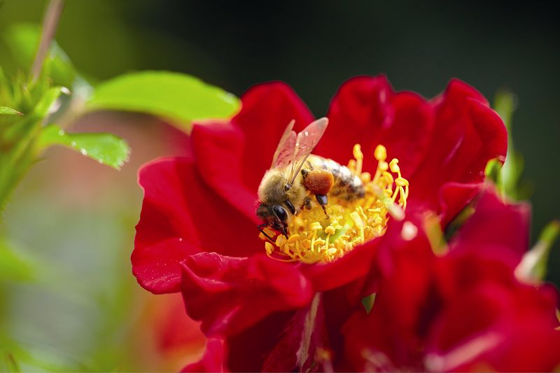
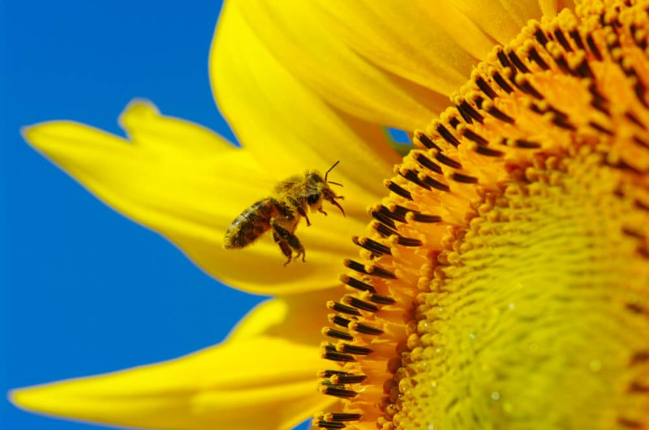

|


|
A brief IntroductionThis project aims to challenge conventional perspectives on flower recognition systems, which often perceive
them as complicated or inaccessible. It seeks to address issues such as lack of user-friendly interfaces and
limited functionality, recognizing that these factors hinder widespread adoption and meaningful engagement
with the technology. The goal of this initiative is to develop an intuitive and enjoyable flower recognition
system that promotes curiosity and exploration. Additionally, it endeavours to enhance the user experience by
equipping the system with advanced image recognition algorithms, thus empowering users to identify flowers
with ease and sparking new interest and appreciation for the natural world.
|